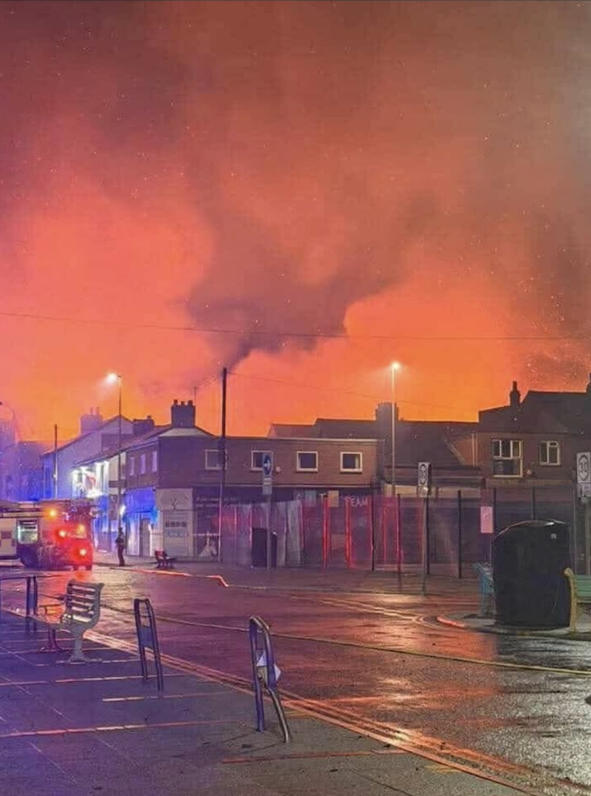
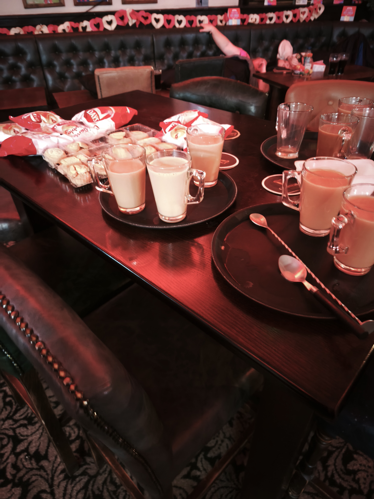
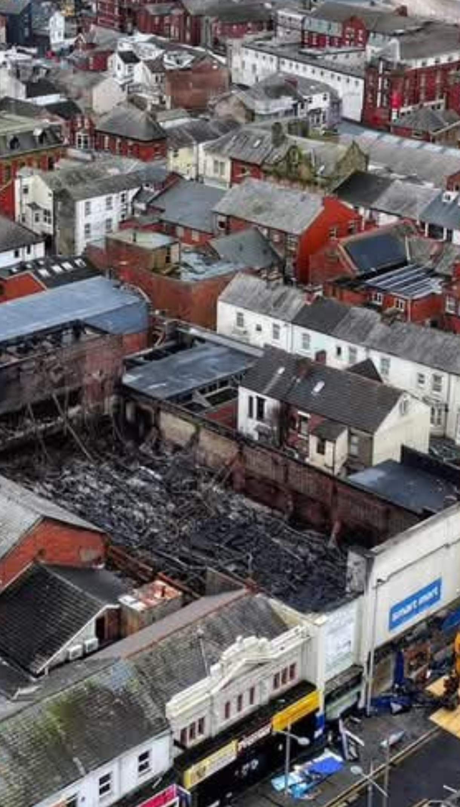
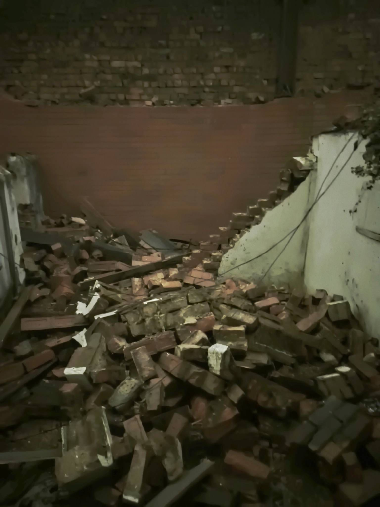
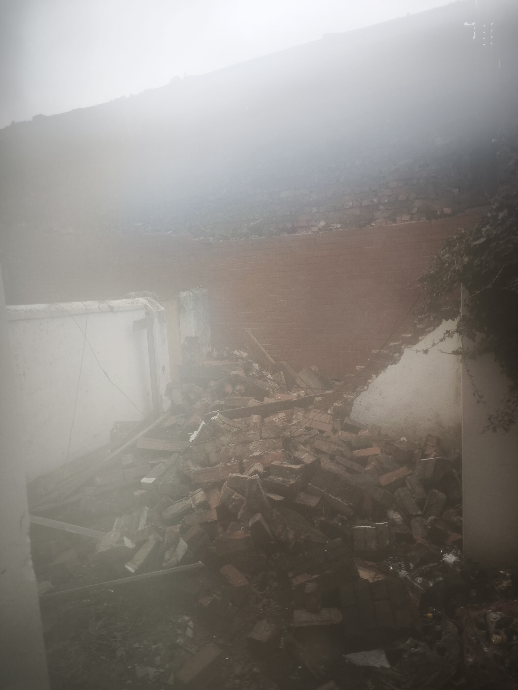
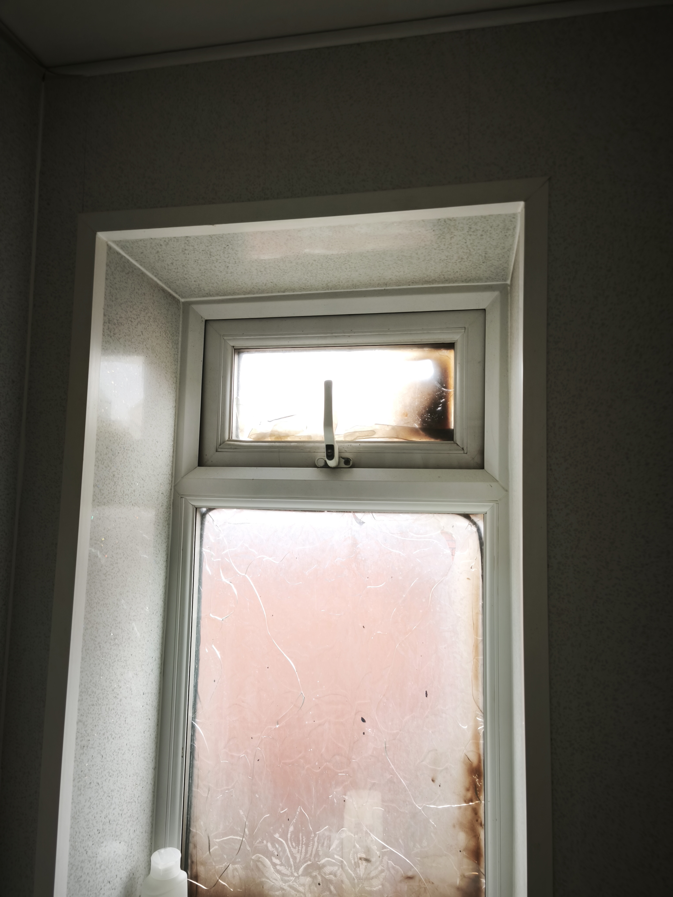

Niki's Story
The Knock in the Night
It was a quiet Friday night on Gordon Street. Just before midnight on February 6, 2026, Niki was fast asleep in the terraced house at number 4 — a few metres from the rear of the Smart Mart building on Waterloo Road.
At 23:52, a loud, unnatural roar jolted Niki awake. Rushing to the window, the sight was terrifying: the roof of the commercial building directly behind the home was completely engulfed in flames. Niki immediately dialed 999. The operator confirmed crews were rushing to the scene and warned: "Stay inside. Keep your doors and windows securely closed."
But the situation escalated instantly. Just three minutes later, at 23:55, police pounded on the front door. Over the noise of sirens and crackling flames, the officers issued a blunt command to evacuate immediately. Leaving everything behind, the police gave one final, unsettling instruction before Niki stepped into the cold night: "Leave your front door unlocked for emergency access."
- 23:30 LFRS logs fire
- 23:52 Niki woken, calls 999
- 23:55 Police evacuation



With nowhere else to go, the displaced residents made their way to the nearest safe place — The Last Resort pub on the corner. What they found there was anything but last resort. The staff stayed up through the entire night, providing hot drinks, snacks, and a place to sit while the fire raged. They kept an eye on the houses from the pub and made sure nobody was left standing in the cold. It was an act of genuine kindness at the worst possible moment.
The Scale
Stepping out onto the street, the scale of the incident became clear. Thick, black smoke filled the neighbourhood. Waterloo Road was closed between Gordon Street and Moore Street. Over four days, 15 fire engines, two aerial ladder platforms, a Drone Unit, and a Command Support Unit were deployed. Meanwhile, displaced residents could only observe from a distance — watching drone footage shared online.

Emergency Accommodation
Having been evacuated, Niki was provided temporary accommodation by the local authority. However, the initial housing offered had a number of issues — including damp conditions and a disabled fire alarm panel.
Due to the condition of the initial accommodation, Niki arranged alternative shelter independently — booking into the Lyndene Hotel and later a South Shore guesthouse. With no access to the property, even basic following weeks, Niki bore the financial strain of paying for accommodation, clothing, and essentials out of pocket while waiting for official help.
The Shocking Return
By February 10, the immediate flames were out, and the fire brigade handed control of the site to Blackpool Council. Residents were not informed of this handover.
On February 9, Niki was briefly escorted into the property by a firefighter to collect immediate essentials. At that time, the neighbouring Smart Mart wall overlooking the rear yard was still standing. Two days later, on the evening of February 11, under police escort, Niki was allowed a second brief entry to lock the property. The reality of the aftermath hit hard.
The upper section of the commercial building's rear brick wall had collapsed directly into Niki's rear yard. Masonry, dust, and structural debris covered the area. Critically, Niki had not been directly informed of this development — the collapse was only discovered through photos shared online by other residents.



Still Displaced
On the afternoon of February 27, 2026 — 21 days after the fire — Niki received the call that residents were permitted to return to Gordon Street. But as the next section describes, "allowed home" did not mean the ordeal was over.
The practical consequences continue to mount. United Utilities confirmed that Niki's water account was closed as of February 5 — the day before the fire — yet the same utility sent an urgent debt collection threat on February 25, warning of credit score damage if not resolved within 10 days. The boiler flue appears to have melted from heat exposure. Window frames on the rear of the property may need replacing. Until full access is permitted, the extent of internal damage remains unknown.
Some neighbours on the opposite side of Gordon Street have returned — entering at their own risk — and report no damage or smell inside their homes. But numbers 2, 4, and 6, directly backing onto the fire site, remain locked out. The fencing has been repositioned so that front doors are now physically accessible, but officially, access is still prohibited.
The Fear Realised: A Devastating Return
For exactly three weeks, the hardest part had been the uncertainty — not knowing if pipes had burst, if the roof was leaking, or if anyone had broken into the empty, vulnerable house. On the afternoon of February 27, Niki finally received a call confirming that residents were permitted to return. It was the first official notification that access was being restored.
But the relief of finally going home was shattered on arrival that evening. The rear gates that previously restricted access were completely gone, leaving the back of the property exposed to the non-gated alleyway. The back door had been knocked down entirely, with the opening merely boarded over.
Stepping inside, the reality of the last three weeks became clear. The house had been broken into and searched. Multiple drawers were opened and contents disturbed, particularly in the bedroom where items had been tipped out onto the bed. With the property compromised, it was impossible to immediately confirm what, if anything, had been taken.
The structural damage from the fire and exposure was also apparent: windows were broken, the roof was leaking, and gas and electricity appeared to have been cut off at the mains.
Niki immediately retreated to avoid disturbing potential evidence and reported the break-in to Lancashire Police. Police conducted initial video enquiries that night and scheduled a full forensic examination for the following morning. Niki also formally requested additional patrols and security for the area.
A preliminary inventory of suspected missing property was subsequently compiled and submitted to police. The full extent of what was taken cannot yet be confirmed, as the electricity remains off at the mains and the property has not been fully checked.
The property had last been secured by Niki at around 9pm on February 11, during the police-escorted trip to lock the doors. Approximately two days later, Niki observed from the rear that boarding had been put up. At the time, Niki assumed the boarding had been placed over the back door — reinforcing the existing lock. It was only on February 27, when Niki finally walked through the property, that the reality became clear: the back door had been knocked down entirely, and the boarding was not an addition to the door but a replacement for it.
The break-in almost certainly occurred within that narrow window — between the door being locked on the evening of February 11 and the boarding appearing around February 13. At the community meeting on February 18, Niki specifically requested a way to make escorted visits to check on the property. This was acknowledged — but never facilitated. No mechanism was offered and no contact provided. With no ability to enter or even check on the property from February 11 until the 27th, there was no way to know the home had been compromised. For over two weeks, Niki believed the property was secure. It wasn't.
Even with access now technically permitted, the property is not livable. Windows are broken, the roof is leaking, gas and electricity are off at the mains, and the rear of the property remains exposed and unsecured. Being "allowed home" and actually being able to live there are two very different things.
For Niki, the fire was only the beginning. The aftermath brought displacement, financial strain, utility threats, and finally, the trauma of a burglary. The physical fire was extinguished in four days, but the damage it set in motion continues to destroy livelihoods and homes weeks later.
"I can't give an assessment of either damage or losses at this time, I have been careful to not disturb much... I have taken small steps to limit further damage without disrupting either forensics or assessment." — Niki Cooke, email to Loss Adjuster, February 27, 2026
Last updated: March 1, 2026
23 days displaced. Property not livable.
This is a record of the events as experienced by one resident. When the emergency services leave, the people who remain are left to navigate the long, unglamorous process of recovery — chasing emails, buying toothbrushes, watching demolition from a distance, and hoping that tomorrow might be the day they're allowed to go home.